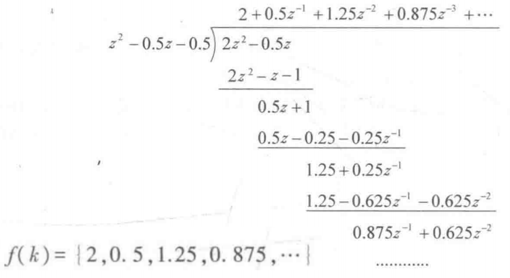
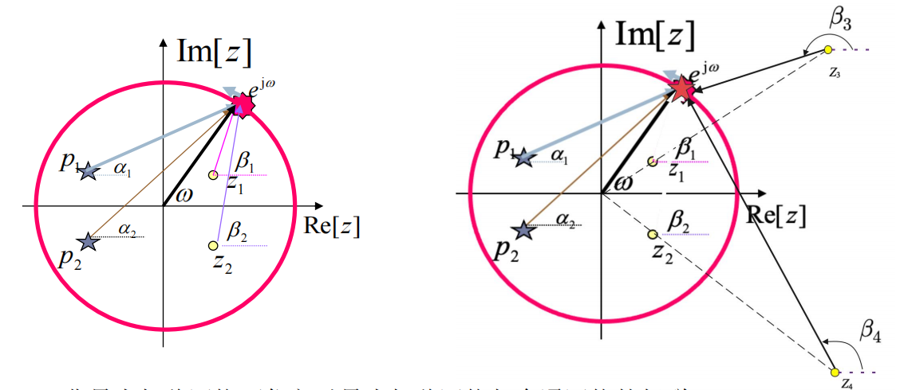

第五部分 离散时间系统变换域分析
I. z 变换及其收敛区
- 双边 z 变换: F(z)=k=−∞∑+∞f(k)z−k.
- F(z) 称为生成函数.
- 与LT,FT的关系: F(s)=F(z)∣z=esT, F(jω)=F(z)∣z=ejωT.
- 同理有单边 z 变换: F(z)=k=0∑+∞f(k)z−k.
- z 变换的收敛域: 使幂级数 ∑f(k)z−k 收敛的 z 的集合.
- 此时, z 为复数.
- 由幂级数的性质, 此收敛域的形式通常为 ∣z∣∈(a,b).
常见序列的收敛域
- 有限长序列 F(z)=k=k1∑k2f(k)z−k.
- k1<0, k2<0⇒0≤∣z∣<∞.
- k1<0, k2>0⇒0<∣z∣<∞.
- k1>0, k2>0⇒0<∣z∣≤∞.
- 右边序列 F(z)=k=0∑+∞f(k)z−k.
- 存在一个收敛半径 R, 收敛区间为 R<∣z∣≤∞.
- 左边序列 F(z)=k=−∞∑−1f(k)z−k.
- 同理可得, 收敛区间为 0<∣z∣≤R.
- 双边序列. 可视作 左边序列+右边序列.
常用序列的右边 z 变换
- 单位函数. δ(k)↔1.
- 阶跃函数. ε(k)↔z−1z(∣z∣>1).
- 幂函数. vkε(k)↔z−vz(∣z∣>v).
- 左边序列的 z 变换求法: F(z)=k=−∞∑−1f(k)z−k=k=0∑+∞f(−k)(z1)−k−f(0).
- 其中, f(−k) 即右边序列.
- 求得右边序列 z 变换后需对 z 取倒数.
II. z 变换的性质
- 线性特性.
- 移序特性.
- 单边 z 变换: f(k+1)↔z[F(z)−f(0)], f(k−1)↔z−1[F(z)+f(−1)].
- 双边 z 变换: f(k+n)↔znF(z).
- 尺度变换. akf(k)↔F(az).
- 微分特性. kf(k)↔−zdzdF(z)
- 卷积定理. f1(k)∗f2(k)↔F1(z)F2(z).
- 初值/终值定理. f(0)=limz→∞F(z), f(∞)=limz→0(z−1)F(z).
III. 反 z 变换
幂级数展开法
- 法1: 利用Maclaurin公式. 由于计算复杂, 通常不使用.
- 法2: 长除法.
- 写出 F(z) 的分式形式, 对分子分母进行长除.
- 求得因式的系数值即为 f(k) 序列.
- 该方法只能得到有限的 f(k) 值, 而无法得到完整解析式.
- 例子:

部分分式展开法
步骤如下:
- 将 zF(z) 进行部分分式展开.
- 将结果乘以 z , 利用已知 z 变换的结果: z−vz↔vkε(k).
- 对于双边 z 变换, 与ILT类似, 需要将部分分式分为左边序列与右边序列:
- 极点位于收敛区内侧: 右边信号.
- 极点位于收敛区外侧: 左边信号.
- 左边信号IZT的求法:
- 先求出右边反 z 变换的结果.
- 将 ε(k) 替换为 ε(−k−1).
- 在整体结果前添加负号.
留数法
z 变换的留数法使用相对较少, 此处略.
IV. ZT与LT的关系
- F(z) 与 Fδ(s) 的关系: 带入 z=esT 可以得到.
- F(z) 与 F(s) 的关系: F(z)=∑iRes[z−esTF(s)z]s=si.
V. 离散时间系统 z 变换分析
- 描述方法: 对于 n 阶系统, 通过差分方程描述为: ∑aiy(k+i)=∑ble(k+l).
零输入响应
即求解 ∑aiy(k+i)=0.
- 求解方法: 时域法.
- 利用移序算子 S 求出特征根, 得到对应的解.
零状态响应
求解步骤如下:
- 等式两侧同时移序, 保证方程是右边序列, 在 k>0 范围内求解.
- 移项得到转移函数 H(z)=∑aizi∑blzl.
- 零状态响应为 Yzs(z)=E(z)H(z).
全响应
- 分别求零输入响应与零状态响应, 将两者相加.
- 直接通过 z 变换求全响应.
系统稳定性 z 域分析
- 方法: 判断极点位于单位圆的内部或外部. 步骤如下.
- 求出 H(z), 其分母为 D(z).
- 引入双线性变换 z=λ−1λ+1, 令 G(λ)=D(λ−1λ+1).
- 对 G(λ) 应用 Routh-Hurwitz判据. G(λ) 无正实根时, 系统稳定.
VI. 离散时间序列Fourier变换 (DTFT)
- DTFT: F(ejω)=k=−∞∑+∞f(k)e−jkω.
- 将离散非周期序列转换为连续的周期函数.
- F(ejω) 称为频谱密度函数.
- DTFT存在的条件: z 变换的收敛区间包含单位圆.
- DTFT类似Fourier变换, 其定义域为 (−∞,+∞), 故不存在单边/双边的区分.
- DTFT的性质:
- 线性特性.
- 时域平移. f(k−k0)↔e−jk0ωF(ejω).
- 频域平移. ejω0kf(k)↔F(ej(ω−ω0)).
- 频域微分. −jkf(k)↔dωdF(ejω).
- 奇偶虚实性(共轭对称): 若 f(k) 为实数, 则 F(ejω) 的实部偶对称, 虚部奇对称.
- 卷积定理. f1(k)∗f2(k)↔F1(e−jω)F2(e−jω).
离散时间序列Fourier级数 (DFS)
- DFS: F(m)=N1k=0∑N−1f(k)e−jkN2πm.
VII. 离散时间系统频率响应
- 主要针对两种情况: 激励为三角函数 cos(ωk),ejωk 与幂函数 vk.
- 求解步骤:
- 写出系统的转移函数 H(z).
- 针对三角信号激励, 带入 z=ejω, 并利用Euler公式得到三角形式的频率响应函数 H(ejω)=∣H(ejω)∣ejφ(ω).
- 与连续时间系统类似, 将激励函数用相量表示, 带入相应的频率, 有 R(ejωi)=H(ejωi)E(ejωi).
- 对于幂函数激励, 带入 z=v, 直接有 y(k)=H(v)vk.
- 注意: 这种方法针对于双边序列, 求得的结果也是双边序列, 无需再添加 ε(k).
重要的系统函数及其极零图
- 全通系统.
- 除 z=0 的极点, 极/零点均关于单位圆镜像对称, 即 zi=pi1.
- 此时, 单位圆上系统函数为常数, 即 ∣H(ejω)∣=Const. 说明: 对任意的离散正弦信号, 系统有相同的幅频响应.
- 最小相位系统:
- 极零点均位于单位圆内.
- 此时, 极零点到单位圆上各点的相移最小.
- 同样地, 一个非最小相移系统可由 全通系统+最小相移系统得到.
